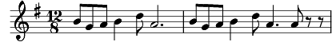

1. [SA] Voici la Mi-Eté, Bergers de nos montagnes,
Compagnons et compagnes, Que ce jour soit fêté
Voici la Mi-Eté, Voici la Mi-Eté
2. [TB] Nous autres montagnards Avons aussi nos fêtes,
Le ciel bleu sur nos têtes, Fiers de nos fiers remparts,
Nous autres montagnards, Nous autres montagnards
3. [SATB] Allons jeunesse allons, La danse nous appelle
Que chacun ait sa belle, Sa rose des vallons
Allons jeunesse allons, Allons jeunesse allons !
4. Les filles, les garçons, A tourner se hasardent,
En tournant se regardent, On connaît ces façons
Des filles des garçons, Des filles des garçons.
5. [SAB] Ah… Ah…Ah… Ah… Ah…Ah…Ah
5. [T] Plus d'un regard aussi, Qui n'est pas de la danse
Mais il rêve en silence, Que jeune il vint ici
Plus d'un regarde aussi, Plus d'un regarde aussi
6. [SATB] Ainsi ceux de Gryon, Dansent à Taveyanne
Comme ceux de Lausanne, Dansent sur Montbenon
Ainsi ceux de Gryon, Ainsi ceux de Gryon
7. Voici la Mi-Eté, Bergers de nos montagnes,
Compagnons et compagnes, Que ce jour soit fêté
Voici la Mi-Eté, Voici (voici) la Mi-Eté